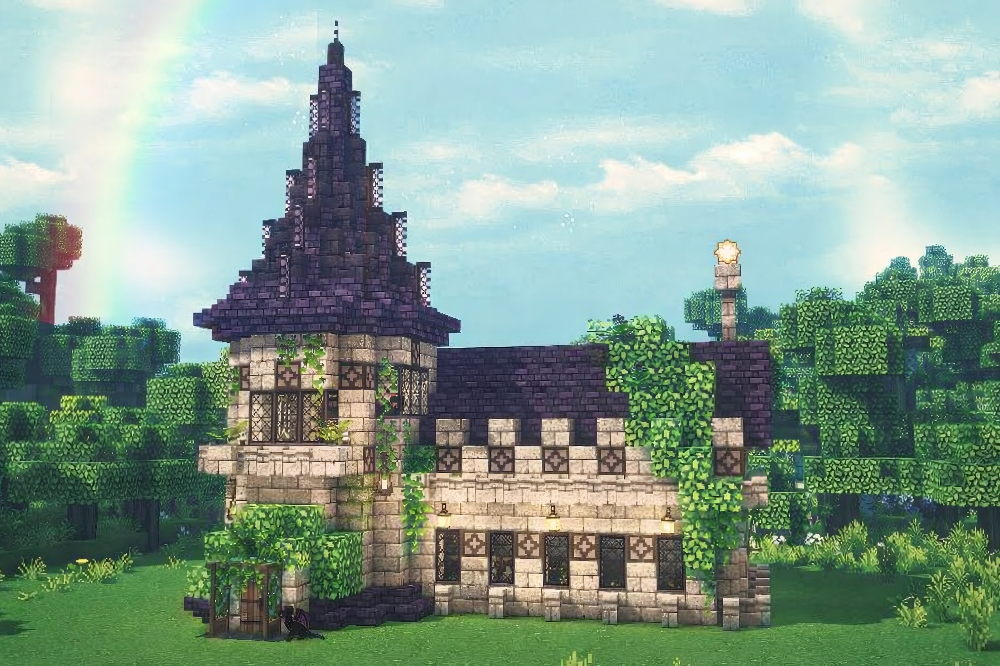
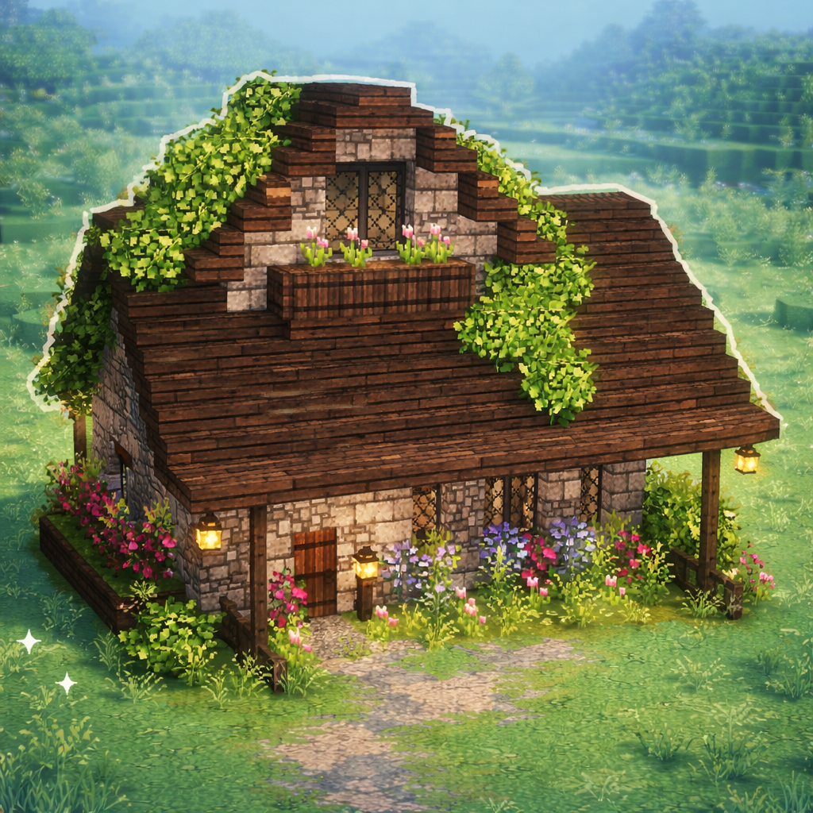
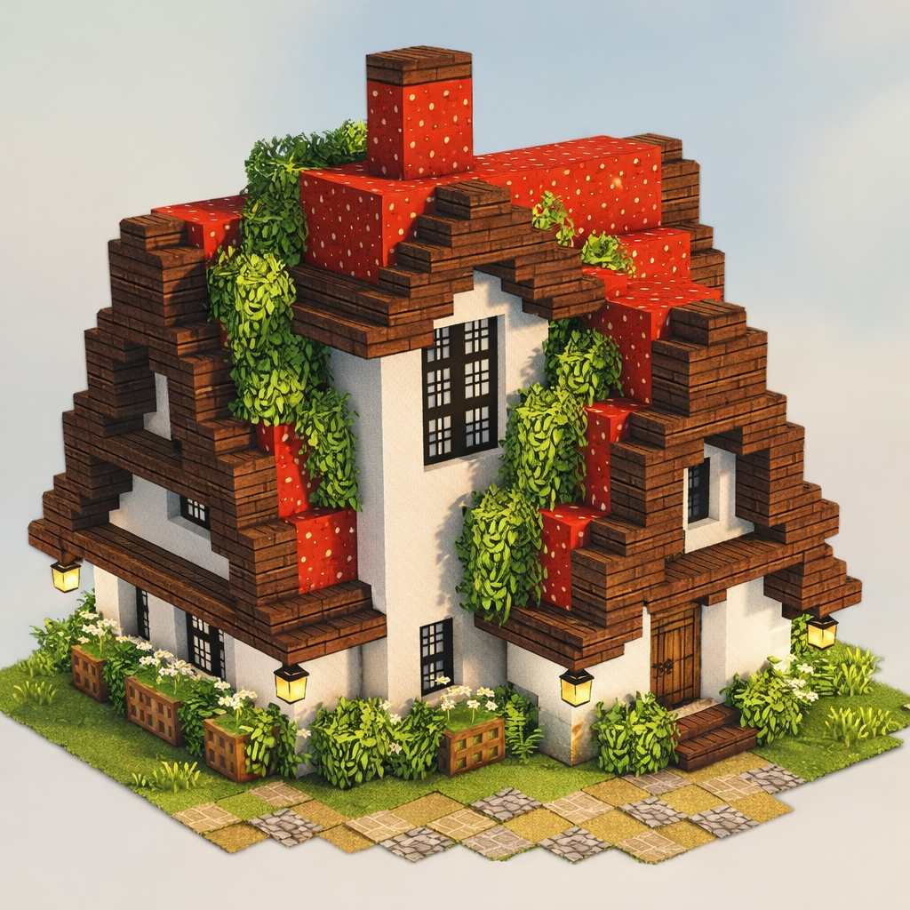

Uma pequena morada encantada, erguida em forma de cogumelo, trazendo
cores vibrantes e fantasia direta para o seu mundo Minecraft. Com seu teto em
formato de cogumelo vermelho pontilhado de branco, ela se destaca no bioma,
lembrando vilas mágicas e histórias de fantasia.
As paredes arredondadas e
acolhedoras conferem um clima de aconchego, enquanto janelas pequenas
revelam luz suave que ilumina o interior.

Imagine uma casinha que respira tranquilidade: telhado de tábuas gastas,
janelas cheias de luz dourada e uma varanda onde vasos de flores dançam ao
vento. O caminho de pedra leva a uma porta de madeira entalhada, atrás da qual
há prateleiras com potes, uma lareira que chia histórias antigas e cantos perfumados
por lavanda e pão recém-assado. Trepadeiras escalam as paredes, pequenas luzes pendem
da beira do telhado e, ao anoitecer, a casa se transforma num refúgio acolhedor,
perfeita para esconder tesouros, cultivar memórias e viver aventuras serenas no seu mundo Minecraft.

Sunflower Cottage House é envolta por fileiras de girassóis
altos que seguem o sol como pequenos guardiões. Fachada clara com acentos solares
e janelas em arco permitem que o brilho entre a qualquer hora do dia. Um pergolado
coberto de trepadeiras de flores amarelas sombreia o banco de entrada, ideal para
um chá matinal ou para assistir pássaros curiosos piando nos campos.
No interior, paredes em tons de creme, móveis de vime e almofadas florais criam
um ambiente arejado, onde pequenos vasos de girassol decoram cada canto. Esta casa é
perfeita para sonhadores que desejam construir jornadas ensolaradas e jardins secretos
no seu universo Minecraft.

Sinta-se dentro de um conto de fadas: torres pontiagudas cobertas de musgo,
janelas em formato de arco e jardins secretos com cogumelos brilhantes.
A fachada delicada é adornada por vitrais que contam histórias antigas e
uma pequena ponte de madeira cruza um riacho cantarolante.
Dentro, móveis esculpidos à mão, tapetes bordados com estrelas e
prateleiras cheias de livros de magia criam um clima encantado.
Lampiões flutuantes acendem ao anoitecer, guiando viajantes perdidos até
a lareira crepitante, onde você pode planejar sua próxima aventura,
construir amizades com criaturas místicas e transformar seu mundo
Minecraft em uma verdadeira história memorável.

Imagine uma casinha que respira tranquilidade: telhado de tábuas gastas,
janelas cheias de luz dourada e uma varanda onde vasos de flores dançam ao
vento. O caminho de pedra leva a uma porta de madeira entalhada, atrás da qual
há prateleiras com potes, uma lareira que chia histórias antigas e cantos perfumados
por lavanda e pão recém-assado. Trepadeiras escalam as paredes, pequenas luzes pendem
da beira do telhado e, ao anoitecer, a casa se transforma num refúgio acolhedor,
perfeita para esconder tesouros, cultivar memórias e viver aventuras serenas no seu mundo Minecraft.

Sinta-se dentro de um conto de fadas: torres pontiagudas cobertas de musgo,
janelas em formato de arco e jardins secretos com cogumelos brilhantes.
A fachada delicada é adornada por vitrais que contam histórias antigas e
uma pequena ponte de madeira cruza um riacho cantarolante.
Dentro, móveis esculpidos à mão, tapetes bordados com estrelas e
prateleiras cheias de livros de magia criam um clima encantado.
Lampiões flutuantes acendem ao anoitecer, guiando viajantes perdidos até
a lareira crepitante, onde você pode planejar sua próxima aventura,
construir amizades com criaturas místicas e transformar seu mundo
Minecraft em uma verdadeira história memorável.

Entre num mundo encantado: vigas retorcidas, pedras suaves e musgo vivo, já
portas rústicas guiam os passos por trilhas de folhas e luzes cintilante.
Atravesse o arco florido e descubra portais onde fadas guardam segredos
uma trilha antiga atravessa campos vastos e um lago calmo.
Dentro, pedras preciosas brilham entre véus e riachos de névoas.
pergaminhos antigos flutuam ao vento enquanto pássaros cantam!
Clarões mágicos surgem no crepúsculo, levando sonhos de heróis errantes
e chamas dançantes aquecem o coração de quem busca magia e paz leve
explorar cavernas secretas com elfos sussurrando e desvendar novo.
Águas cristalinas com nenúfares flutuantes, libélulas dançantes e carpas
coloridas que deslizam em círculos preguiçosos. Um pequeno cais de
madeira estende-se sobre a superfície,perfeito para sentar com um livro
ou contemplar o reflexo das nuvens. À noite, vagalumes acionam sua própria
constelação, e os juncos sussurram segredos antigos.
Perto dali, uma casinha de ramos e pedras oferece abrigo, com janelas abertas para
o som suave das rãs e o aroma de ervas frescas. Curiosos patos e coelhos visitam
o banquinho, como velhos amigos, e um banco rústico sob uma árvore em flor
convida aventuras silenciosas.
Este lago cottagecore é um refúgio para sonhadores que desejam construir, cultivar
e explorar com calma, onde cada pôr do sol transforma seu mundo Minecraft em
um santuário de paz e magia natural.

Um poço antigo escondido entre raízes espessas,
onde água cristalina murmura segredos de fadas e
pequenas lanternas pendem de correntes enferrujadas.
Cercado por pedras cobertas de musgo e flores silvestres,
o poço parece um portal para um reino escondido.
Ao lançar uma moeda, você pode quase ouvir canções
de duendes brincalhões e sentir a brisa suave que
traz promessas de aventuras e desejos realizados
no seu mundo Minecraft encantado.

Sunflower Cottage House é envolta por fileiras de girassóis
altos que seguem o sol como pequenos guardiões. Fachada clara com acentos solares
e janelas em arco permitem que o brilho entre a qualquer hora do dia. Um pergolado
coberto de trepadeiras de flores amarelas sombreia o banco de entrada, ideal para
um chá matinal ou para assistir pássaros curiosos piando nos campos.
No interior, paredes em tons de creme, móveis de vime e almofadas florais criam
um ambiente arejado, onde pequenos vasos de girassol decoram cada canto. Esta casa é
perfeita para sonhadores que desejam construir jornadas ensolaradas e jardins secretos
no seu universo Minecraft.

Imagine um castelo escondido em nuvens baixas,
torres refugos de dragões e portas de pedra antigo.
Bandeiras coloridas tremulam ao vento sobre muralhas
cobertas de heras, com pontes levadiças que rangem ao abrir.
No salão principal, candelabros brilham sobre tronos de madeira
e tapeçarias contam lendas de reis bravios e feitiços.
Salas secretas guardam cofres de ouro e livros de encantamentos,
enquanto jardins suspensos exalam perfumes de rosas noturnas.
Cada janela revela um horizonte mágico, convidando você
a explorar, construir e viver seu conto em Minecraft.

Uma casinha doce de morango com telhado vermelho e paredes cor de creme,
enfeitada por cestos de frutas pendurados e trilhas de pedras leves.
Campos de morangueiros cercam a varanda, onde pássaros cantam ao amanhecer.
Janelas com cortinas florais deixam entrar a brisa perfumada de verão,
um pomar que guarda segredos de receitas e porções de geleia.
No interior, prateleiras cheias de frascos coloridos fazem brilhar os olhos
e uma cozinha aconchegante cheira a biscoitos recém-assados.
Este lar é perfeito para sonhadores que desejam colher, cozinhar
e criar histórias saborosas em seu mundo Minecraft.

Imagine uma casinha que respira tranquilidade: telhado de tábuas gastas,
janelas cheias de luz dourada e uma varanda onde vasos de flores dançam ao
vento. O caminho de pedra leva a uma porta de madeira entalhada, atrás da qual
há prateleiras com potes, uma lareira que chia histórias antigas e cantos perfumados
por lavanda e pão recém-assado. Trepadeiras escalam as paredes, pequenas luzes pendem
da beira do telhado e, ao anoitecer, a casa se transforma num refúgio acolhedor,
perfeita para esconder tesouros, cultivar memórias e viver aventuras serenas no seu mundo Minecraft.

A Casa Morango é um sonho açucarado em tijolos: telhado vermelho pontilhado de branco
e paredes em tom de rosa suave, com cortinas xadrez que dançam na varanda.
Canteiros de morangueiros ladeiam a entrada e um caminho de pedras leva a um
banquinho perfeito para chá ao pôr do sol e potes caseiros de geleia.
Por dentro, luz quente, almofadas macias e detalhes delicados transformam cada canto em
um refúgio doce — ideal para criar, explorar e colecionar memórias no seu mundo Minecraft.

Uma pequena morada encantada, erguida em forma de cogumelo, trazendo
cores vibrantes e fantasia direta para o seu mundo Minecraft. Com seu teto em
formato de cogumelo vermelho pontilhado de branco, ela se destaca no bioma,
lembrando vilas mágicas e histórias de fantasia.
As paredes arredondadas e
acolhedoras conferem um clima de aconchego, enquanto janelas pequenas
revelam luz suave que ilumina o interior.

Sunflower Cottage House é envolta por fileiras de girassóis
altos que seguem o sol como pequenos guardiões. Fachada clara com acentos solares
e janelas em arco permitem que o brilho entre a qualquer hora do dia. Um pergolado
coberto de trepadeiras de flores amarelas sombreia o banco de entrada, ideal para
um chá matinal ou para assistir pássaros curiosos piando nos campos.
No interior, paredes em tons de creme, móveis de vime e almofadas florais criam
um ambiente arejado, onde pequenos vasos de girassol decoram cada canto. Esta casa é
perfeita para sonhadores que desejam construir jornadas ensolaradas e jardins secretos
no seu universo Minecraft.
Aprendi como:
 Início
Início Mushroom
Mushroom Dark
Dark Sunflower
Sunflower Strawberry
Strawberry Cherry
Cherry Fairytale
Fairytale Ponte
Ponte Lago
Lago Poço
Poço Castelo
Castelo Construções
Construções Casas
Casas Decorações
Decorações Sobre
Sobre Contato
Contato